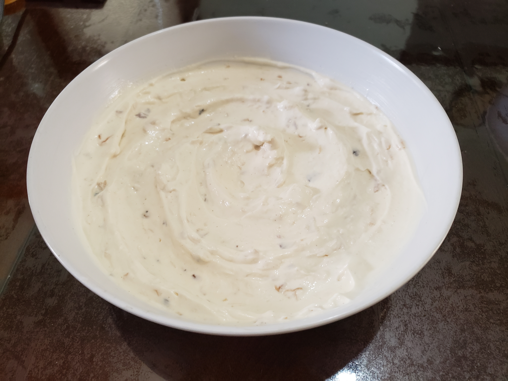

Onion Dip

Ingredients:
- 2 tbsp Olive oil
- 1 1/2 cup White onions, diced
- 1/4 tsp Salt
- 1 1/2 cup Sour cream
- 3/4 cup Mayonaise
- 1/4 tsp Garlic powder
- 1/4 tsp Ground white pepper
- 1/2 tsp Salt
Instructions:
- In a pan over medium heat add olive oil, heat and add onions and salt. Cook the onions until they are very caramelized, about 20 minutes. Remove from heat and set aside to cool, about 30 minutes.
- Mix the rest of the ingredients, and then add the cooled onions. Refrigerate and stir again for the onion flavor to fully incorporate.